2025 Advanced Higher Physics marking instructions
Source: Scottish Qualifications Authority (SQA) / Qualifications Scotland. This is a StemInteract HTML companion, not an official HTML edition. Selectable text is supplied alongside original page images. Use the images or original PDF for equations, powers, fractions, vector notation, tables and diagrams; text extraction cannot fully preserve mathematical layout.
Jump to a question
PDF page 1
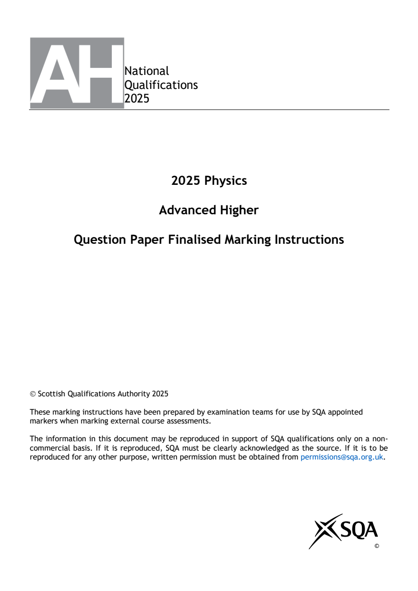
Selectable page text
National
Qualifications
2025
2025 Physics
Advanced Higher
Question Paper Finalised Marking Instructions
© Scottish Qualifications Authority 2025
These marking instructions have been prepared by examination teams for use by SQA appointed
markers when marking external course assessments.
The information in this document may be reproduced in support of SQA qualifications only on a non-
commercial basis. If it is reproduced, SQA must be clearly acknowledged as the source. If it is to be
reproduced for any other purpose, written permission must be obtained from permissions@sqa.org.uk.
©PDF page 2
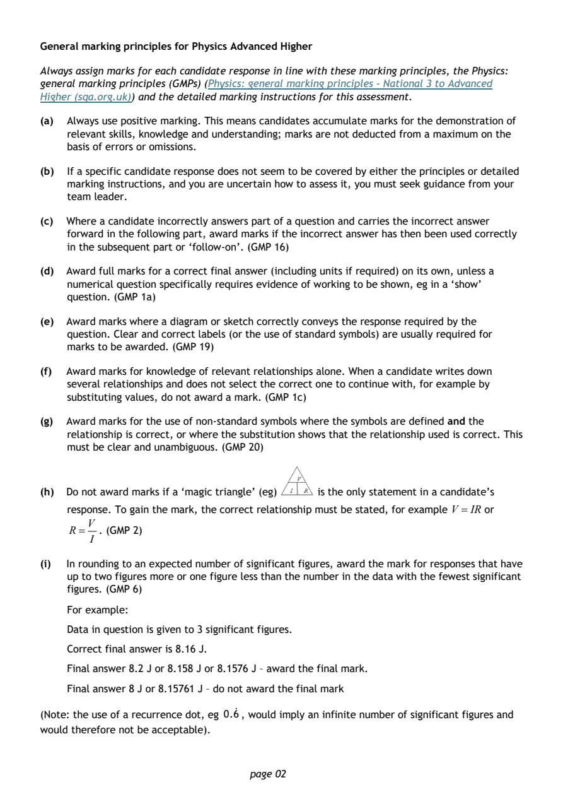
Selectable page text
General marking principles for Physics Advanced Higher
Always assign marks for each candidate response in line with these marking principles, the Physics:
general marking principles (GMPs) (Physics: general marking principles - National 3 to Advanced
Higher (sqa.org.uk)) and the detailed marking instructions for this assessment.
(a) Always use positive marking. This means candidates accumulate marks for the demonstration of
relevant skills, knowledge and understanding; marks are not deducted from a maximum on the
basis of errors or omissions.
(b) If a specific candidate response does not seem to be covered by either the principles or detailed
marking instructions, and you are uncertain how to assess it, you must seek guidance from your
team leader.
(c) Where a candidate incorrectly answers part of a question and carries the incorrect answer
forward in the following part, award marks if the incorrect answer has then been used correctly
in the subsequent part or ‘follow-on’. (GMP 16)
(d) Award full marks for a correct final answer (including units if required) on its own, unless a
numerical question specifically requires evidence of working to be shown, eg in a ‘show’
question. (GMP 1a)
(e) Award marks where a diagram or sketch correctly conveys the response required by the
question. Clear and correct labels (or the use of standard symbols) are usually required for
marks to be awarded. (GMP 19)
(f) Award marks for knowledge of relevant relationships alone. When a candidate writes down
several relationships and does not select the correct one to continue with, for example by
substituting values, do not award a mark. (GMP 1c)
(g) Award marks for the use of non-standard symbols where the symbols are defined and the
relationship is correct, or where the substitution shows that the relationship used is correct. This
must be clear and unambiguous. (GMP 20)
(h) Do not award marks if a ‘magic triangle’ (eg) is the only statement in a candidate’s
response. To gain the mark, the correct relationship must be stated, for example V = IR or
V
R= . (GMP 2)
I
(i) In rounding to an expected number of significant figures, award the mark for responses that have
up to two figures more or one figure less than the number in the data with the fewest significant
figures. (GMP 6)
For example:
Data in question is given to 3 significant figures.
Correct final answer is 8.16 J.
Final answer 8.2 J or 8.158 J or 8.1576 J – award the final mark.
Final answer 8 J or 8.15761 J – do not award the final mark
(Note: the use of a recurrence dot, eg 0.6, would imply an infinite number of significant figures and
would therefore not be acceptable).
page 02PDF page 3
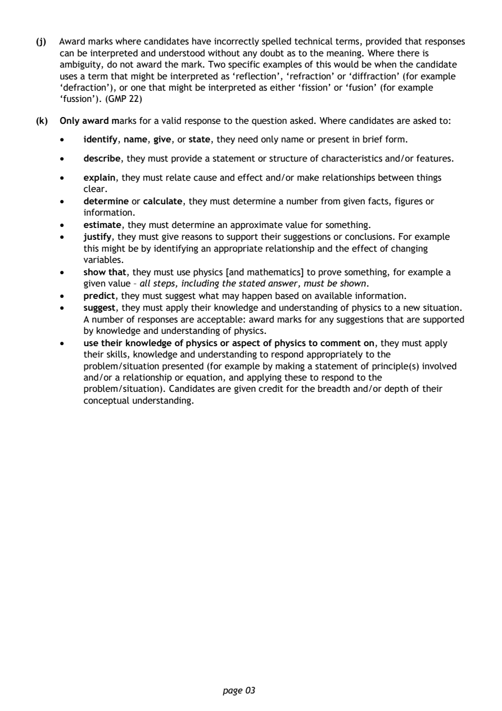
Selectable page text
(j) Award marks where candidates have incorrectly spelled technical terms, provided that responses
can be interpreted and understood without any doubt as to the meaning. Where there is
ambiguity, do not award the mark. Two specific examples of this would be when the candidate
uses a term that might be interpreted as ‘reflection’, ‘refraction’ or ‘diffraction’ (for example
‘defraction’), or one that might be interpreted as either ‘fission’ or ‘fusion’ (for example
‘fussion’). (GMP 22)
(k) Only award marks for a valid response to the question asked. Where candidates are asked to:
• identify, name, give, or state, they need only name or present in brief form.
• describe, they must provide a statement or structure of characteristics and/or features.
• explain, they must relate cause and effect and/or make relationships between things
clear.
• determine or calculate, they must determine a number from given facts, figures or
information.
• estimate, they must determine an approximate value for something.
• justify, they must give reasons to support their suggestions or conclusions. For example
this might be by identifying an appropriate relationship and the effect of changing
variables.
• show that, they must use physics [and mathematics] to prove something, for example a
given value – all steps, including the stated answer, must be shown.
• predict, they must suggest what may happen based on available information.
• suggest, they must apply their knowledge and understanding of physics to a new situation.
A number of responses are acceptable: award marks for any suggestions that are supported
by knowledge and understanding of physics.
• use their knowledge of physics or aspect of physics to comment on, they must apply
their skills, knowledge and understanding to respond appropriately to the
problem/situation presented (for example by making a statement of principle(s) involved
and/or a relationship or equation, and applying these to respond to the
problem/situation). Candidates are given credit for the breadth and/or depth of their
conceptual understanding.
page 03PDF page 4
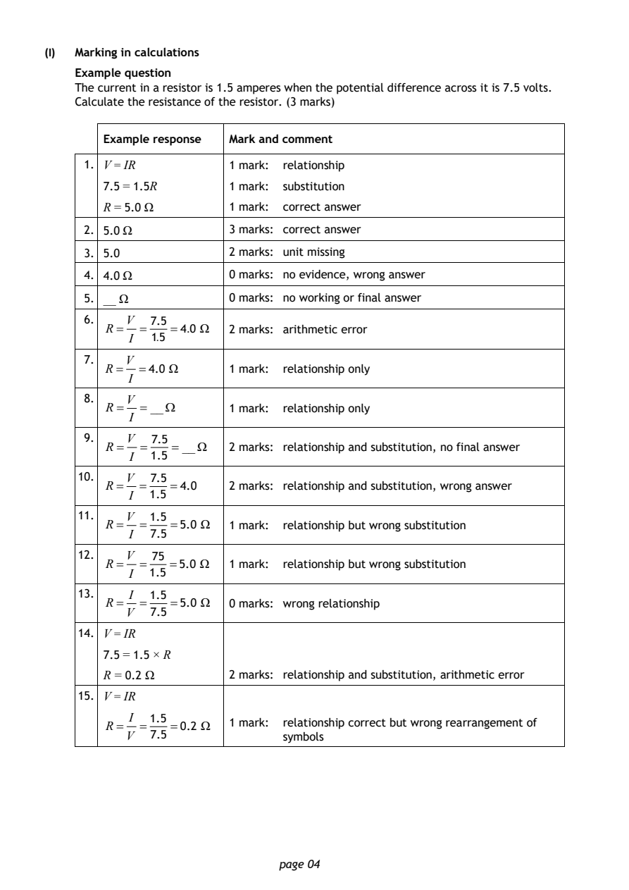
Selectable page text
(l) Marking in calculations
Example question
The current in a resistor is 1.5 amperes when the potential difference across it is 7.5 volts.
Calculate the resistance of the resistor. (3 marks)
Example response Mark and comment
1. V = IR 1 mark: relationship
7.5 = 1.5R 1 mark: substitution
R = 5.0 Ω 1 mark: correct answer
2. 5.0 Ω 3 marks: correct answer
3. 5.0 2 marks: unit missing
4. 4.0 Ω 0 marks: no evidence, wrong answer
5. __ Ω 0 marks: no working or final answer
6. V 7.5
R= = =4.0 Ω 2 marks: arithmetic error
I 1.5
7. V
R= =4.0 Ω 1 mark: relationship only
I
8. V
R= = __Ω 1 mark: relationship only
I
9. V 7.5
R= = = __Ω 2 marks: relationship and substitution, no final answer
I 1.5
10. V 7.5
R= = =4.0 2 marks: relationship and substitution, wrong answer
I 1.5
11. V 1.5
R= = =5.0 Ω 1 mark: relationship but wrong substitution
I 7.5
12. V 75
R= = =5.0 Ω 1 mark: relationship but wrong substitution
I 1.5
13. I 1.5
R= = =5.0 Ω 0 marks: wrong relationship
V 7.5
14. V = IR
7.5 = 1.5 × R
R = 0.2 Ω 2 marks: relationship and substitution, arithmetic error
15. V = IR
I 1.5
R= = =0.2 Ω 1 mark: relationship correct but wrong rearrangement of
V 7.5 symbols
page 04PDF page 5
Question 1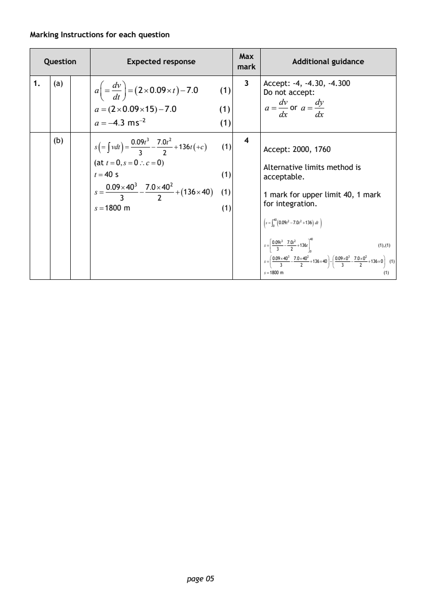
Selectable page text
Marking Instructions for each question
Max
Question Expected response Additional guidance
mark
1. (a) dv 3 Accept: -4, -4.30, -4.300
a = =(2×0.09×t)−7.0 (1)
Do not accept:
dt
dv dy
a =(2×0.09×15)−7.0 (1) a = or a =
dx dx
a =−4.3 ms⁻² (1)
(b) s ( =∫vdt ) = 0.09t³ − 7.0t² +136t(+c) (1) 4 Accept: 2000, 1760
3 2
(at t =0,s=0∴c=0)
Alternative limits method is
t =40 s (1)
acceptable.
0.09×40³ 7.0×40²
s= − +(136×40) (1)
1 mark for upper limit 40, 1 mark
3 2
for integration.
s=1800 m (1)
(
s=∫₀⁴
0(0.09t²−7.0t²+136)
dt
)
0.09t³ 7.0t² 40
s= − +136t (1),(1)
3 2 0
0.09×40³ 7.0×40² 0.09×0³ 7.0×0²
s= − +136×40− − +136×0 (1)
3 2 3 2
s=1800 m (1)
page 05PDF page 6
Question 2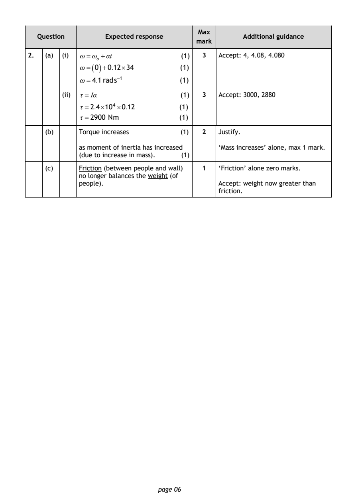
Selectable page text
Max
Question Expected response Additional guidance
mark
2. (a) (i) ω=ωₒ +αt (1) 3 Accept: 4, 4.08, 4.080
ω=(0)+0.12×34 (1)
ω=4.1 rads⁻¹ (1)
(ii) τ = Iα (1) 3 Accept: 3000, 2880
τ =2.4×10⁴×0.12 (1)
τ =2900 Nm (1)
(b) Torque increases (1) 2 Justify.
as moment of inertia has increased ‘Mass increases’ alone, max 1 mark.
(due to increase in mass). (1)
(c) Friction (between people and wall) 1 ‘Friction’ alone zero marks.
no longer balances the weight (of
people). Accept: weight now greater than
friction.
page 06PDF page 7
Question 3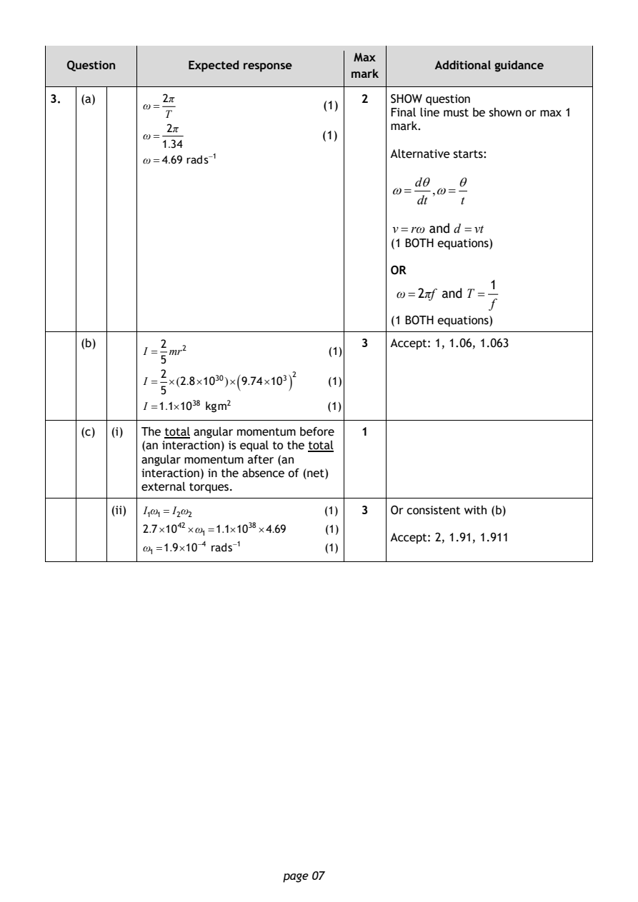
Selectable page text
Max
Question Expected response Additional guidance
mark
3. (a) 2π 2 SHOW question
ω= (1)
T Final line must be shown or max 1
2π mark.
ω= (1)
1.34
Alternative starts:
ω=4.69 rads⁻¹
dθ θ
ω= ,ω=
dt t
v=rω and d =vt
(1 BOTH equations)
OR
1
ω=2πf and T =
f
(1 BOTH equations)
(b) 2 3 Accept: 1, 1.06, 1.063
I = mr² (1)
5
2
( )
I = ×(2.8×10³⁰)× 9.74×10³ ² (1)
5
I =1.1×10³⁸ kgm² (1)
(c) (i) The total angular momentum before 1
(an interaction) is equal to the total
angular momentum after (an
interaction) in the absence of (net)
external torques.
(ii) I₁ω₁=I₂ω₂ (1) 3 Or consistent with (b)
2.7×10⁴²×ω₁=1.1×10³⁸×4.69 (1)
Accept: 2, 1.91, 1.911
ω₁=1.9×10⁻⁴ rads⁻¹ (1)
page 07PDF page 8
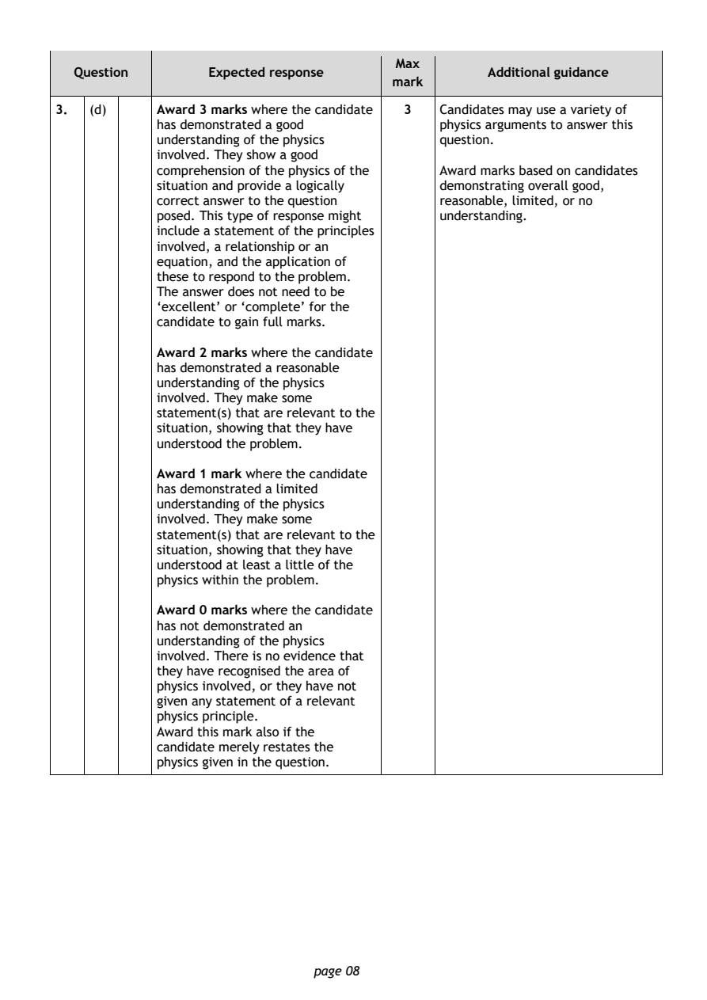
Selectable page text
Max
Question Expected response Additional guidance
mark
3. (d) Award 3 marks where the candidate 3 Candidates may use a variety of
has demonstrated a good physics arguments to answer this
understanding of the physics question.
involved. They show a good
comprehension of the physics of the Award marks based on candidates
situation and provide a logically demonstrating overall good,
correct answer to the question reasonable, limited, or no
posed. This type of response might understanding.
include a statement of the principles
involved, a relationship or an
equation, and the application of
these to respond to the problem.
The answer does not need to be
‘excellent’ or ‘complete’ for the
candidate to gain full marks.
Award 2 marks where the candidate
has demonstrated a reasonable
understanding of the physics
involved. They make some
statement(s) that are relevant to the
situation, showing that they have
understood the problem.
Award 1 mark where the candidate
has demonstrated a limited
understanding of the physics
involved. They make some
statement(s) that are relevant to the
situation, showing that they have
understood at least a little of the
physics within the problem.
Award 0 marks where the candidate
has not demonstrated an
understanding of the physics
involved. There is no evidence that
they have recognised the area of
physics involved, or they have not
given any statement of a relevant
physics principle.
Award this mark also if the
candidate merely restates the
physics given in the question.
page 08PDF page 9
Question 4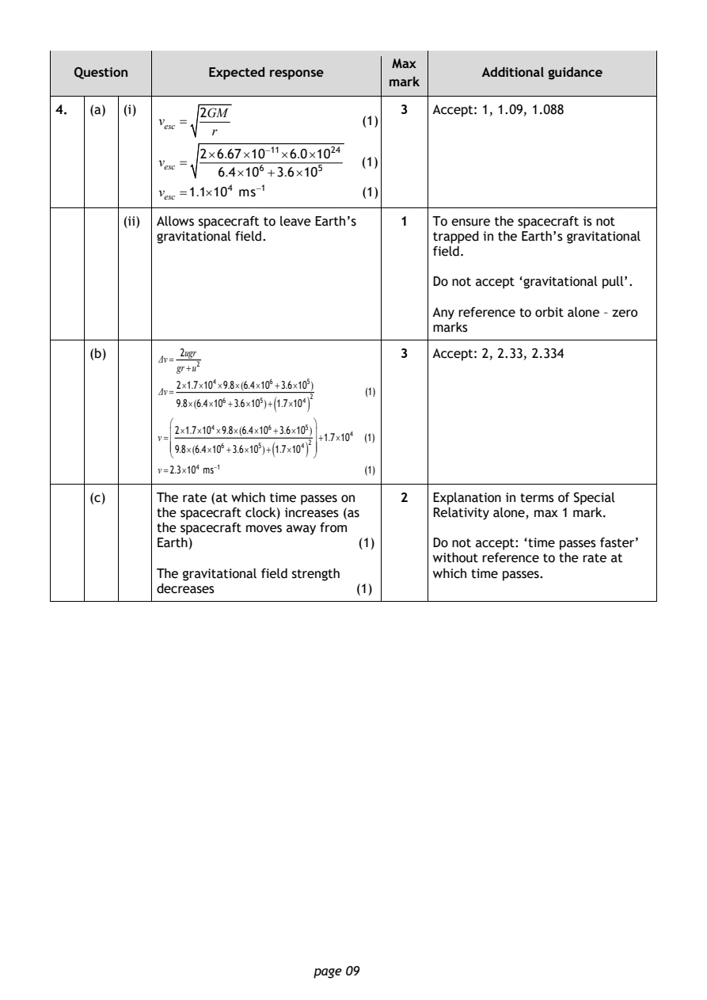
Selectable page text
Max
Question Expected response Additional guidance
mark
4. (a) (i) 2GM 3 Accept: 1, 1.09, 1.088
vₑₛ_{c} = (1)
r
2×6.67×10⁻¹¹×6.0×10²⁴
vₑₛ_{c} = (1)
6.4×10⁶ +3.6×10⁵
vₑₛ_{c} =1.1×10⁴ ms⁻¹ (1)
(ii) Allows spacecraft to leave Earth’s 1 To ensure the spacecraft is not
gravitational field. trapped in the Earth’s gravitational
field.
Do not accept ‘gravitational pull’.
Any reference to orbit alone – zero
marks
(b) 2ugr 3 Accept: 2, 2.33, 2.334
Δv=
gr+u²
2×1.7×10⁴×9.8×(6.4×10⁶+3.6×10⁵)
Δv= (1)
9.8×(6.4×10⁶+3.6×10⁵)+ (1.7×10⁴)²
v=2×1.7×10⁴×9.8×(6.4×10⁶+3.6×10⁵)+1.7×10⁴
(1)
9.8×(6.4×10⁶+3.6×10⁵)+ (1.7×10⁴)²
v=2.3×10⁴ ms⁻¹ (1)
(c) The rate (at which time passes on 2 Explanation in terms of Special
the spacecraft clock) increases (as Relativity alone, max 1 mark.
the spacecraft moves away from
Earth) (1) Do not accept: ‘time passes faster’
without reference to the rate at
The gravitational field strength which time passes.
decreases (1)
page 09PDF page 10
Question 5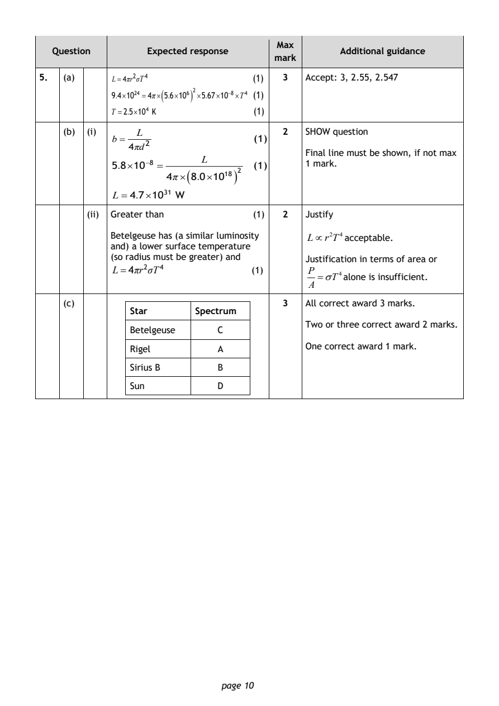
Selectable page text
Max
Question Expected response Additional guidance
mark
5. (a) L=4πr²σT⁴ (1) 3 Accept: 3, 2.55, 2.547
9.4×10²⁴ =4π× ( 5.6×10⁶ ) ²×5.67×10⁻⁸×T⁴ (1)
T =2.5×10⁴ K (1)
(b) (i) L 2 SHOW question
b = (1)
4πd²
Final line must be shown, if not max
L
5.8×10⁻⁸ = (1) 1 mark.
( )
4π× 8.0×10¹⁸ ²
L =4.7×10³¹ W
(ii) Greater than (1) 2 Justify
Betelgeuse has (a similar luminosity L∝r²T⁴acceptable.
and) a lower surface temperature
(so radius must be greater) and Justification in terms of area or
L=4πr²σT⁴ (1) P
=σT⁴alone is insufficient.
A
(c) 3 All correct award 3 marks.
Star Spectrum
Two or three correct award 2 marks.
Betelgeuse C
One correct award 1 mark.
Rigel A
Sirius B B
Sun D
page 10PDF page 11
Question 6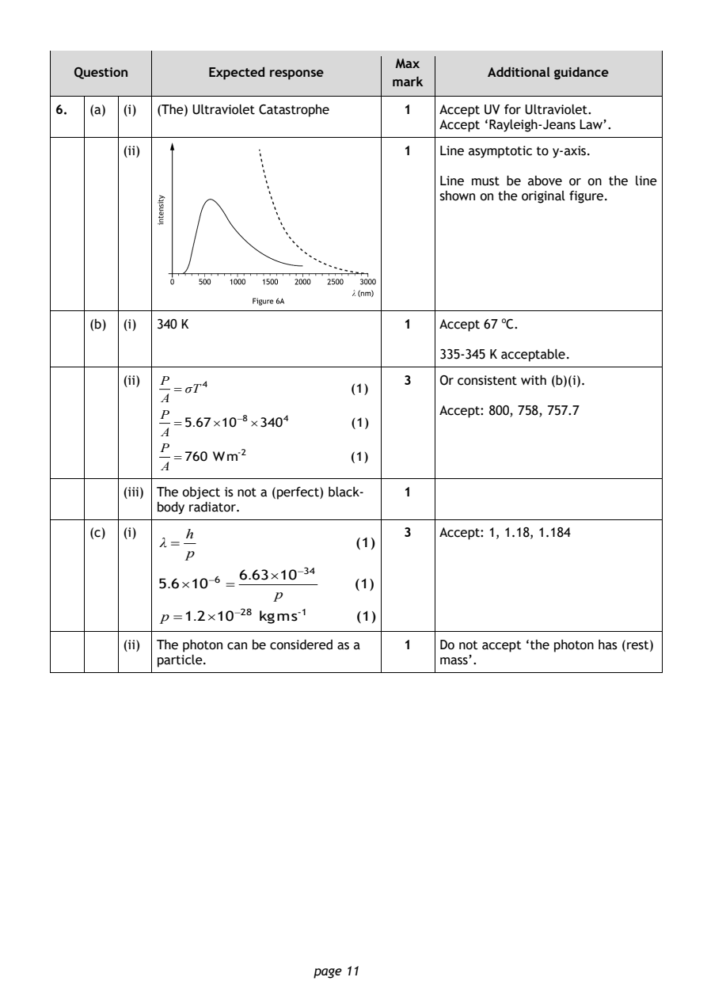
Selectable page text
Max
Question Expected response Additional guidance
mark
6. (a) (i) (The) Ultraviolet Catastrophe 1 Accept UV for Ultraviolet.
Accept ‘Rayleigh-Jeans Law’.
(ii) 1 Line asymptotic to y-axis.
Line must be above or on the line
shown on the original figure.
(b) (i) 340 K 1 Accept 67 ^{o}C.
335-345 K acceptable.
(ii) P 3 Or consistent with (b)(i).
=σT⁴ (1)
A
Accept: 800, 758, 757.7
P
=5.67×10⁻⁸×340⁴ (1)
A
P
=760 Wm⁻² (1)
A
(iii) The object is not a (perfect) black- 1
body radiator.
(c) (i) h 3 Accept: 1, 1.18, 1.184
λ = (1)
p
6.63×10⁻³⁴
5.6×10⁻⁶ = (1)
p
p =1.2×10⁻²⁸ kgms⁻¹ (1)
(ii) The photon can be considered as a 1 Do not accept ‘the photon has (rest)
particle. mass’.
page 11PDF page 12
Question 7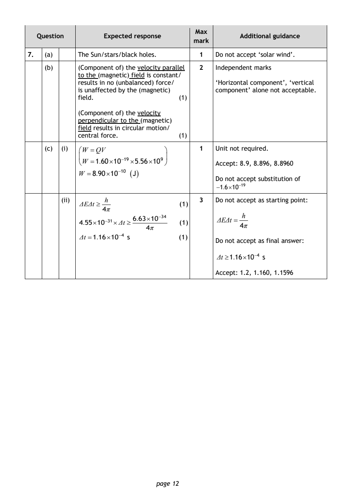
Selectable page text
Max
Question Expected response Additional guidance
mark
7. (a) The Sun/stars/black holes. 1 Do not accept ‘solar wind’.
(b) (Component of) the velocity parallel 2 Independent marks
to the (magnetic) field is constant/
results in no (unbalanced) force/ ‘Horizontal component’, ‘vertical
is unaffected by the (magnetic) component’ alone not acceptable.
field. (1)
(Component of) the velocity
perpendicular to the (magnetic)
field results in circular motion/
central force. (1)
(c) (i) W =QV 1 Unit not required.
W =1.60×10⁻¹⁹×5.56×10⁹
Accept: 8.9, 8.896, 8.8960
W =8.90×10⁻¹⁰ (J)
Do not accept substitution of
−1.6×10⁻¹⁹
(ii) h 3 Do not accept as starting point:
ΔEΔt ≥ (1)
4π
h
4.55×10⁻³¹×Δt ≥
6.63×10⁻³⁴
(1)
ΔEΔt =
4π
4π
Δt =1.16×10⁻⁴ s (1)
Do not accept as final answer:
Δt ≥1.16×10⁻⁴ s
Accept: 1.2, 1.160, 1.1596
page 12PDF page 13
Question 8Selectable page text
Max
Question Expected response Additional guidance
mark
8. Award 3 marks where the candidate 3 Candidates may use a variety of
has demonstrated a good physics arguments to answer this
understanding of the physics question.
involved. They show a good
comprehension of the physics of the Award marks based on candidates
situation and provide a logically demonstrating overall good,
correct answer to the question reasonable, limited, or no
posed. This type of response might understanding.
include a statement of the principles
involved, a relationship or an
equation, and the application of
these to respond to the problem.
The answer does not need to be
‘excellent’ or ‘complete’ for the
candidate to gain full marks.
Award 2 marks where the candidate
has demonstrated a reasonable
understanding of the physics
involved. They make some
statement(s) that are relevant to the
situation, showing that they have
understood the problem.
Award 1 mark where the candidate
has demonstrated a limited
understanding of the physics
involved. They make some
statement(s) that are relevant to the
situation, showing that they have
understood at least a little of the
physics within the problem.
Award 0 marks where the candidate
has not demonstrated an
understanding of the physics
involved. There is no evidence that
they have recognised the area of
physics involved, or they have not
given any statement of a relevant
physics principle.
Award this mark also if the
candidate merely restates the
physics given in the question.
page 13PDF page 14
Question 9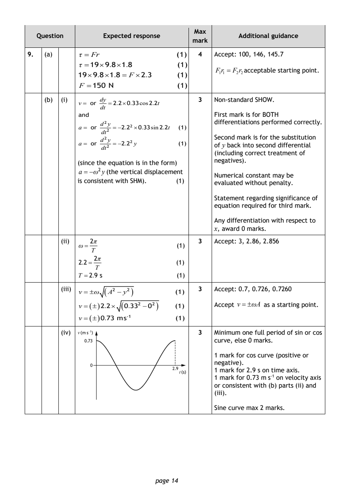
Selectable page text
Max
Question Expected response Additional guidance
mark
9. (a) τ = Fr (1) 4 Accept: 100, 146, 145.7
τ =19×9.8×1.8 (1)
Fr₁ = F₂r₂acceptable starting point.
19×9.8×1.8 = F×2.3 (1) 1
F =150 N (1)
(b) (i) dy 3 Non-standard SHOW.
v= or =2.2×0.33cos2.2t
dt
and First mark is for BOTH
differentiations performed correctly.
d²y
a= or =−2.2²×0.33sin2.2t (1)
dt²
Second mark is for the substitution
d²y
a= or =−2.2²y (1) of y back into second differential
dt²
(including correct treatment of
negatives).
(since the equation is in the form)
a =−ω²y(the vertical displacement
Numerical constant may be
is consistent with SHM). (1)
evaluated without penalty.
Statement regarding significance of
equation required for third mark.
Any differentiation with respect to
x, award 0 marks.
(ii) 2π 3 Accept: 3, 2.86, 2.856
ω= (1)
T
2π
2.2= (1)
T
T =2.9 s (1)
(iii) ( ) 3 Accept: 0.7, 0.726, 0.7260
v =±ω A² − y² (1)
v =(±)2.2× ( 0.33² −0² ) (1) Accept v=±ωA as a starting point.
v =(±)0.73 ms⁻¹ (1)
(iv) 3 Minimum one full period of sin or cos
curve, else 0 marks.
1 mark for cos curve (positive or
negative).
1 mark for 2.9 s on time axis.
1 mark for 0.73 m s⁻¹ on velocity axis
or consistent with (b) parts (ii) and
(iii).
Sine curve max 2 marks.
page 14PDF page 15
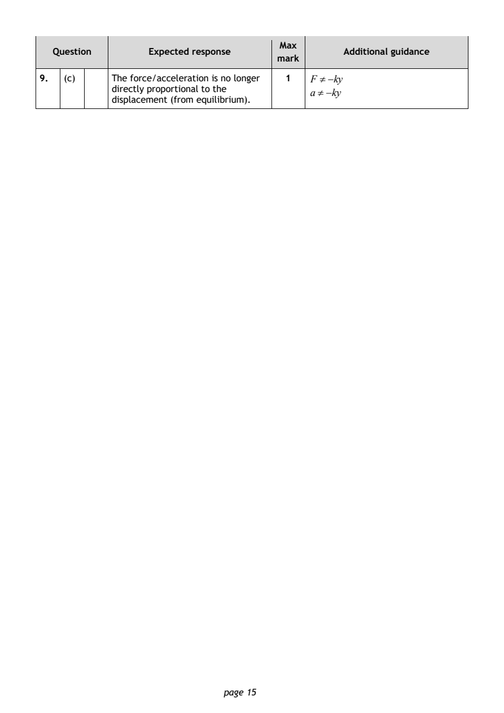
Selectable page text
Max
Question Expected response Additional guidance
mark
9. (c) The force/acceleration is no longer 1 F ≠−ky
directly proportional to the
a≠−ky
displacement (from equilibrium).
page 15PDF page 16
Question 10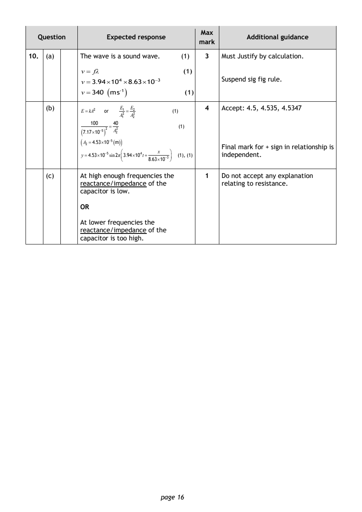
Selectable page text
Max
Question Expected response Additional guidance
mark
10. (a) The wave is a sound wave. (1) 3 Must Justify by calculation.
v= fλ (1)
Suspend sig fig rule.
v=3.94×10⁴×8.63×10⁻³
( )
v=340 ms⁻¹ (1)
(b) E₁ E₂ 4 Accept: 4.5, 4.535, 4.5347
E=kA² or = (1)
A₁² A₂²
100 40
= (1)
(7.17×10⁻⁵)² A₂²
(A₂=4.53×10⁻⁵(m))
Final mark for + sign in relationship is
x
y=4.53×10⁻⁵sin2π3.94×10⁴t+ (1), (1) independent.
8.63×10⁻³
(c) At high enough frequencies the 1 Do not accept any explanation
reactance/impedance of the relating to resistance.
capacitor is low.
OR
At lower frequencies the
reactance/impedance of the
capacitor is too high.
page 16PDF page 17
Question 11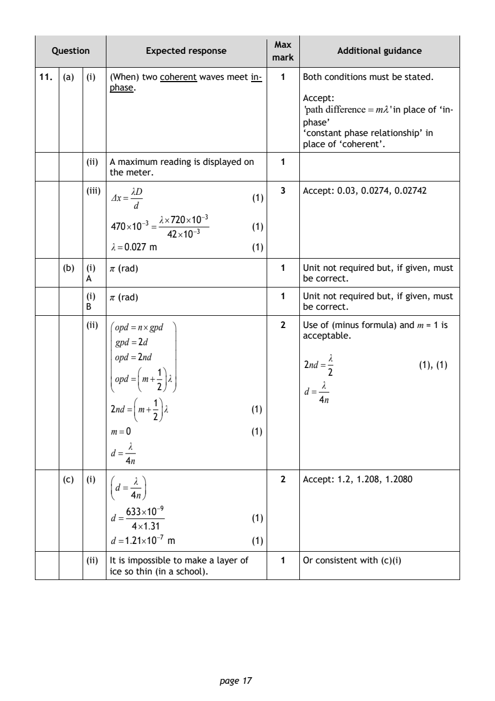
Selectable page text
Max
Question Expected response Additional guidance
mark
11. (a) (i) (When) two coherent waves meet in- 1 Both conditions must be stated.
phase.
Accept:
'path difference=mλ'in place of ‘in-
phase’
‘constant phase relationship’ in
place of ‘coherent’.
(ii) A maximum reading is displayed on 1
the meter.
(iii) λD 3 Accept: 0.03, 0.0274, 0.02742
Δx= (1)
d
λ×720×10⁻³
470×10⁻³ = (1)
42×10⁻³
λ=0.027 m (1)
(b) (i) π (rad) 1 Unit not required but, if given, must
A be correct.
(i) π (rad) 1 Unit not required but, if given, must
B be correct.
(ii) opd =n×gpd 2 Use of (minus formula) and m = 1 is
acceptable.
gpd =2d
opd =2nd λ
2nd = (1), (1)
1 2
opd = m+ λ
2 λ
d =
4n
1
2nd = m+ λ (1)
2
m=0 (1)
λ
d =
4n
(c) (i) λ 2 Accept: 1.2, 1.208, 1.2080
d =
4n
633×10⁻⁹
d = (1)
4×1.31
d =1.21×10⁻⁷ m (1)
(ii) It is impossible to make a layer of 1 Or consistent with (c)(i)
ice so thin (in a school).
page 17PDF page 18
Question 12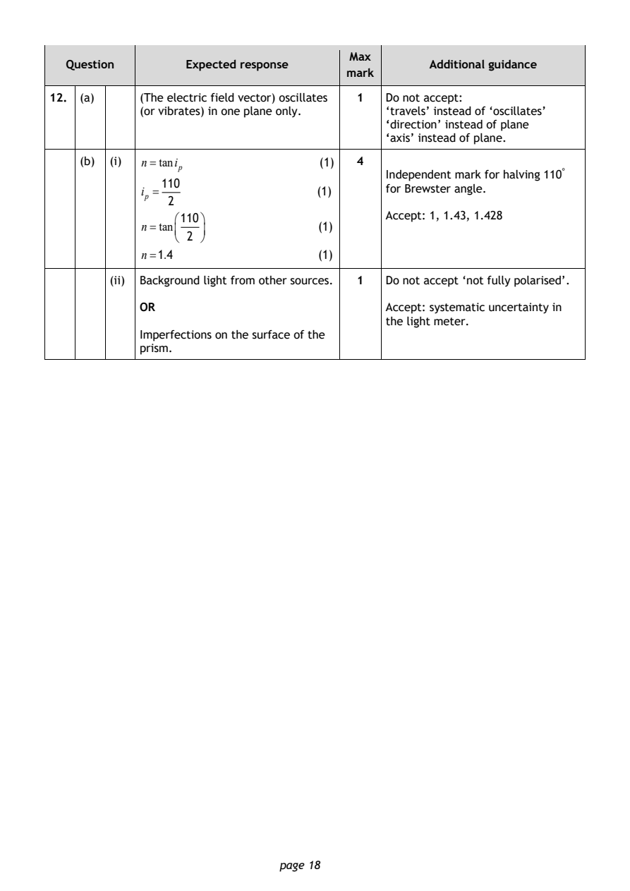
Selectable page text
Max
Question Expected response Additional guidance
mark
12. (a) (The electric field vector) oscillates 1 Do not accept:
(or vibrates) in one plane only. ‘travels’ instead of ‘oscillates’
‘direction’ instead of plane
‘axis’ instead of plane.
(b) (i) n=taniₚ (1) 4
Independent mark for halving 110^{º}
110
iₚ = (1) for Brewster angle.
2
110 Accept: 1, 1.43, 1.428
n=tan
(1)
2
n=1.4 (1)
(ii) Background light from other sources. 1 Do not accept ‘not fully polarised’.
OR Accept: systematic uncertainty in
the light meter.
Imperfections on the surface of the
prism.
page 18PDF page 19
Question 13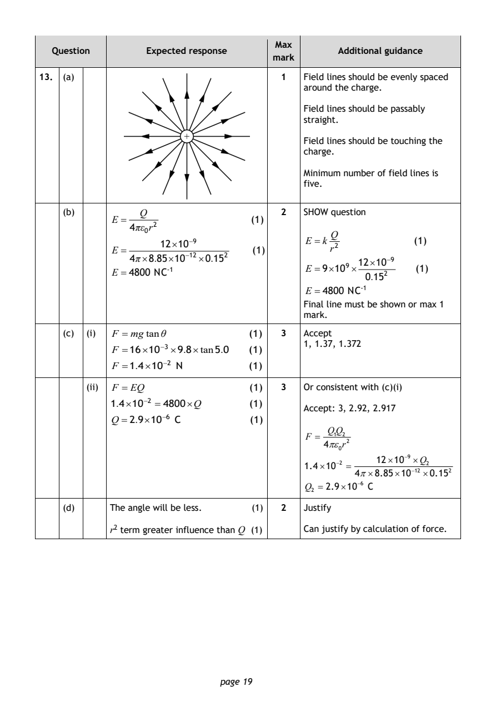
Selectable page text
Max
Question Expected response Additional guidance
mark
13. (a) 1 Field lines should be evenly spaced
around the charge.
Field lines should be passably
straight.
Field lines should be touching the
charge.
Minimum number of field lines is
five.
(b) Q 2 SHOW question
E = (1)
4πε₀r²
Q
E =k (1)
12×10⁻⁹
E = (1) r²
4π×8.85×10⁻¹²×0.15²
12×10⁻⁹
E =9×10⁹× (1)
E =4800 NC⁻¹
0.15²
E =4800 NC⁻¹
Final line must be shown or max 1
mark.
(c) (i) F =mgtanθ (1) 3 Accept
1, 1.37, 1.372
F =16×10⁻³×9.8×tan5.0 (1)
F =1.4×10⁻² N (1)
(ii) F = EQ (1) 3 Or consistent with (c)(i)
1.4×10⁻² =4800×Q (1)
Accept: 3, 2.92, 2.917
Q =2.9×10⁻⁶ C (1)
Q₁Q₂
F =
4πε₀r²
12×10⁻⁹ ×Q₂
1.4×10⁻² =
4π×8.85×10⁻¹² ×0.15²
Q₂ = 2.9×10⁻⁶ C
(d) The angle will be less. (1) 2 Justify
r² term greater influence than Q (1) Can justify by calculation of force.
page 19PDF page 20
Question 14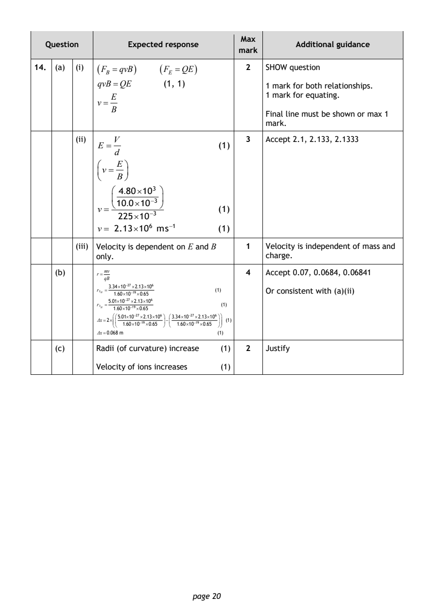
Selectable page text
Max
Question Expected response Additional guidance
mark
14. (a) (i) (F_{B} =qvB) (F_{E} =QE) 2 SHOW question
qvB=QE (1, 1)
1 mark for both relationships.
E 1 mark for equating.
v=
B
Final line must be shown or max 1
mark.
(ii) V 3 Accept 2.1, 2.133, 2.1333
E = (1)
d
E
v =
B
4.80×10³
10.0×10⁻³
v = (1)
225×10⁻³
v = 2.13×10⁶ ms⁻¹ (1)
(iii) Velocity is dependent on E and B 1 Velocity is independent of mass and
only. charge.
(b) mv 4 Accept 0.07, 0.0684, 0.06841
r=
qB
3.34×10⁻²⁷×2.13×10⁶
r_{H} = (1) Or consistent with (a)(ii)
2 1.60×10⁻¹⁹×0.65
5.01×10⁻²⁷×2.13×10⁶
r_{H} = (1)
3 1.60×10⁻¹⁹×0.65
5.01×10⁻²⁷×2.13×10⁶ 3.34×10⁻²⁷×2.13×10⁶
Δx=2×
1.60×10⁻¹⁹×0.65
−
1.60×10⁻¹⁹×0.65
(1)
Δx=0.068 m (1)
(c) Radii (of curvature) increase (1) 2 Justify
Velocity of ions increases (1)
page 20PDF page 21
Question 15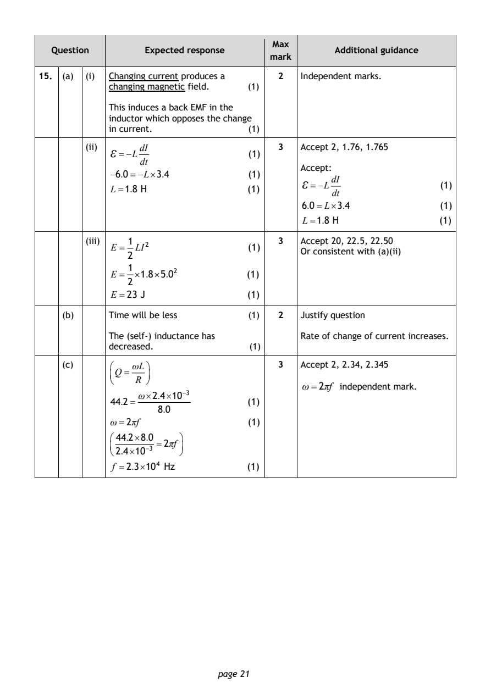
Selectable page text
Max
Question Expected response Additional guidance
mark
15. (a) (i) Changing current produces a 2 Independent marks.
changing magnetic field. (1)
This induces a back EMF in the
inductor which opposes the change
in current. (1)
(ii) ε⁼⁻^{L}dI 3 Accept 2, 1.76, 1.765
(1)
dt
Ac
−6.0=−L×3.4 (1)
ε⁼^{c}^{e}⁻^{p}^{L}^{t}^{:}^{d}_{d}I
(1)
L=1.8 H (1)
t
6.0= L×3.4 (1)
L=1.8 H (1)
(iii) 1 3 Accept 20, 22.5, 22.50
E = LI² (1)
Or consistent with (a)(ii)
2
1
E = ×1.8×5.0² (1)
2
E =23 J (1)
(b) Time will be less (1) 2 Justify question
The (self-) inductance has Rate of change of current increases.
decreased. (1)
(c) ωL 3 Accept 2, 2.34, 2.345
Q=
R
ω=2πf independent mark.
ω×2.4×10⁻³
44.2= (1)
8.0
ω=2πf (1)
44.2×8.0
=2πf
2.4×10⁻³
f =2.3×10⁴ Hz (1)
page 21PDF page 22
Question 16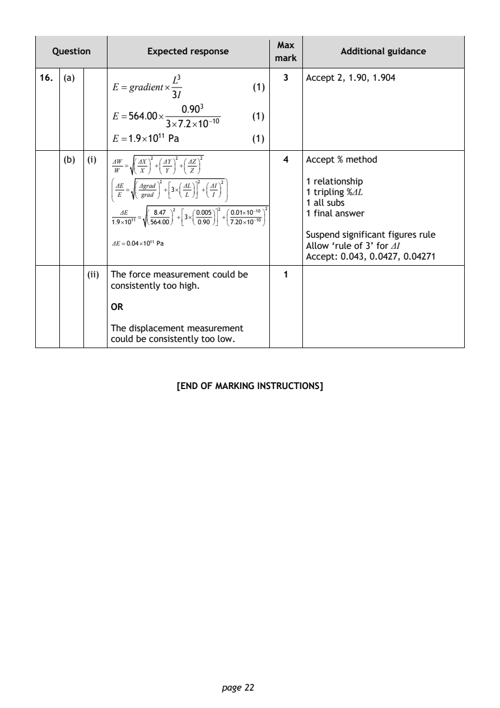
Selectable page text
Max
Question Expected response Additional guidance
mark
16. (a) L³ 3 Accept 2, 1.90, 1.904
E = gradient× (1)
3I
0.90³
E =564.00× (1)
3×7.2×10⁻¹⁰
E =1.9×10¹¹ Pa (1)
(b) (i) 4 Accept % method
ΔW ΔX² ΔY² ΔZ²
W
=
X
+
Y
+
Z
1 relationship
Δ E E = Δ g g r r a a d d ² + 3× Δ L L ² + Δ I I ² 1 tripling %ΔL
1 all subs
ΔE 8.47 ² 0.005² 0.01×10⁻¹⁰ 2 1 final answer
= +3× +
1.9×10¹¹ 564.00 0.90 7.20×10⁻¹⁰
Suspend significant figures rule
ΔE=0.04×10¹¹ Pa Allow ‘rule of 3’ for ΔI
Accept: 0.043, 0.0427, 0.04271
(ii) The force measurement could be 1
consistently too high.
OR
The displacement measurement
could be consistently too low.
[END OF MARKING INSTRUCTIONS]
page 22